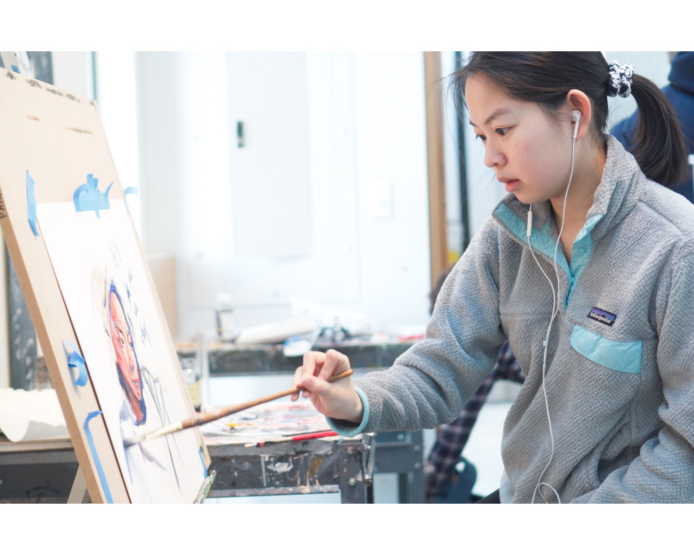
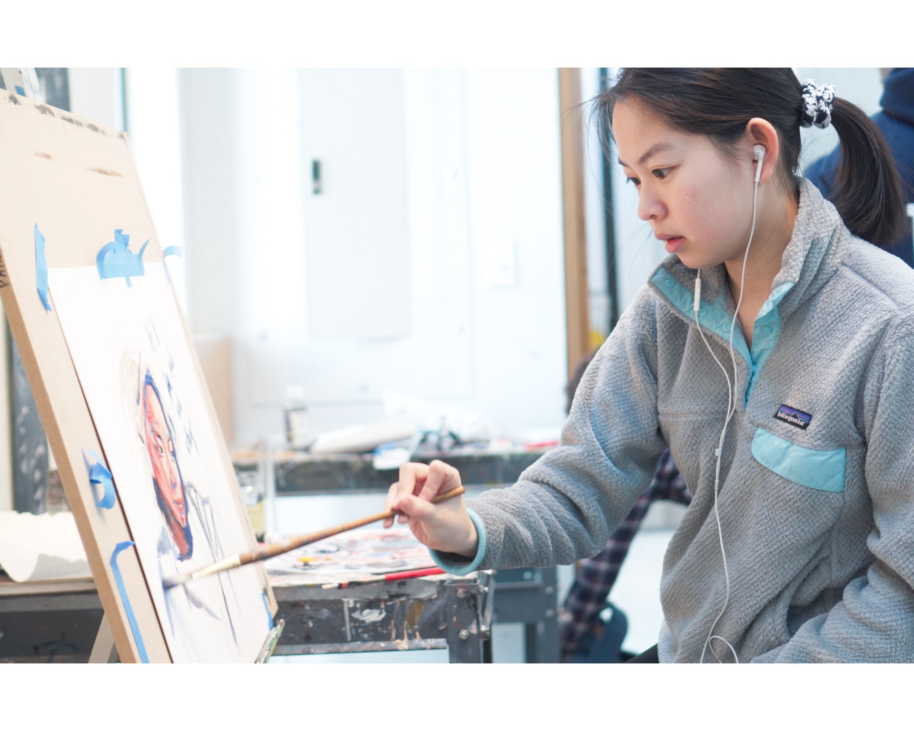
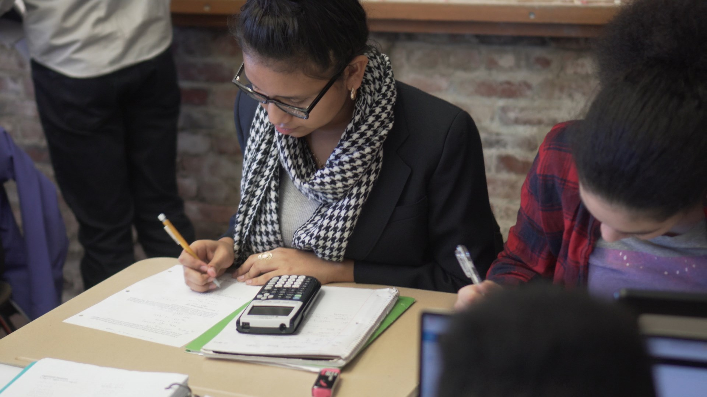

Background
Phillips Academy is a prestigious private high school in Andover, MA. In winter 2017-18, I worked with the admissions office and fellow student Sophie Huang '20 to produce a set of five videos showcasing the math, science, art, and theater/dance departments, as well as one on student weekend life. These were sent out to all newly admitted students as the part of the 2018 #SayYesToAndover campaign.
My contribution:
- Edited 3 of 5 two-minute long academic department videos
- Shot 4 of 7 interviews with faculty and students
- Made motion graphics for all videos
- Event coverage and classroom footage: ~60-70% of all footage used
Tools used:
- Sony A6500 with Sony 35mm f/1.8 Prime
- (Sophie's) Zoom H1 Audio Recorder
- Konova K5 Slider
- Adobe Premiere Pro and Adobe After Effects
Art Department
This was the first video made in the project, about a week before the others. As of such, we were still working out how the videos would feel and how they would be made. This was the only video with a scripted interview (at Ms. Zemlin's request), and has the most slider shots and spans the most classrooms and events, with footage from myself, Sophie, and Mr. Tridenti of the Polk video center. It also features music from Andover sophomore Keishi Kimura.
 

Math Department
Officially the name is Department of Mathematics, Statistics, and Computer Science, as you'll note in the graphics. Apart from the long name, noteworthy about this video is that pretty much all of the footage is handheld, coming from me jumping between math classes and getting footage of students talking, working, and interacting with teachers. I'm also quite happy with how the interview looks. This interview was unscripted, but Sophie did a good job of asking structured questions so it fell into place nicely during editing.
Division of Natural Sciences
Continuing with the trend of uncreasingly inconsistent and inconvenient department names, this video is noteworthy for having two interviews: one with the department chair division head and one with a senior doing a bio research project. This was also one of the earlier videos made, with a good mix of controlled slider shots and handheld classroom shots. It also has a vox-y article motion graphic at 1:08. Necessary? Maybe not, but I was having a bit of fun in After Effects and it certainly helps to drive home the significance and spread of what was being described.
Conclusion
This was the biggest video project I've worked on to date. It's very similar to my 2 Train Robotics project in terms of the promotional/documentary final product, as well as the running around getting b-roll/cutting and slicing interviews up in post production and editing style. Compared to that, I feel I have stepped up my skills and overall production quality significantly. In part this is thanks to better gear - a much larger sensor and faster aperture with my A6500 setup let me get far better exposure and color, and Sophie's Zoom H1 let me get much cleaner audio. However, I also feel that I've grown much better both when shooting b-roll and interviews and when editing, being more confident, decisive, and having more insight into how everything will contribute to the final video. Working with another videographer and editor as well as with the department heads and faculty and admissions team also kept me on my feet and forced me to do better.
For my first year at Andover, this project basically gave me an extensive tour of the school: learning everything about each department, meeting the most important faculty and teachers, and getting close up with the highest level classes and students. Though it took no shortage of running between classrooms during my lunch period or whatever frees came up and asking every other teacher I knew if I could film their class, this project was a lot of fun for me - I gained a lot of useful experience and work for my portfolio, as well as an introduction to the school and a bunch of connections made.